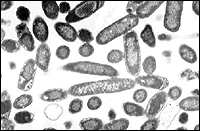

The Biology Project > Cell Biology > PEV > Prokaryotes
Prokaryotes, Eukaryotes, & Viruses Tutorial
Prokaryotes
Characteristics of prokaryotic cells.
 As mentioned in the previous page, prokaryotes include the kingdoms of Monera (simple bacteria) and Archaea. Simply stated, prokaryotes are molecules surrounded by a membrane and cell wall. Prokaryotic cells lack characteristic eukaryotic subcellular membrane enclosed "organelles," but may contain membrane systems inside a cell wall. As mentioned in the previous page, prokaryotes include the kingdoms of Monera (simple bacteria) and Archaea. Simply stated, prokaryotes are molecules surrounded by a membrane and cell wall. Prokaryotic cells lack characteristic eukaryotic subcellular membrane enclosed "organelles," but may contain membrane systems inside a cell wall.
Prokaryotic cells may have photosynthetic pigments, such as is found in cyanobacteria ("blue bacteria"). Some prokaryotic cells have external whip-like flagella for locomotion or hair like pili for adhesion. Prokaryotic cells come in multiple shapes: cocci (round), baccilli (rods), and spirilla or spirochetes (helical cells). |
Bacteria & antibiotics
| Pseudomonas bacteria  | The cell wall is the target for antibiotics, as well as for carbohydrates that our immune system uses to detect infection. A major threat to humankind is the antibiotic-resistant strains of bacteria have been selected by overuse of antibiotics. |
Sympathy for the life of bacteria
| If you were bacteria: |
- You have 0.001 times as much DNA as a eukaryotic cell.
- You live in a medium which has a viscosity about equal to asphalt.
- You have a wonderful "motor" for swimming. Unfortunately, your motor can only run in
two directions and at one speed. In forward, you are propelled in one direction at 30 mph.
In reverse your motor makes you turn flips or tumble. You can only do one or the other.
You cannot stop.
- While you can "learn", you divide every twenty minutes and have to restart your education.
- You can have sex, with males possessing a sexual apparatus for transferring genetic
information to receptive females. However, since you are both going 30 mph it is difficult
to find each other. Furthermore, if you are male, nature gave you a severe problem.
Every time you mate with a female, she turns into a male. In bacteria, "maleness" is an
infective venereal disease.
- Also, at fairly high frequencies, spontaneous mutations cause you to turn into a female.
- Eukaryotes have enslaved some of your "brethren" to use as energy generating
mitochondria and chloroplasts. They are also using you as a tool in a massive effort
to understand genetics. The method of recombinant DNA is designed to exploit you for their
own good. There is no SPCA to protect you.
- The last laugh may be yours. You have spent three and a half billion years practicing
chemical warfare. Humans thought that antibiotics would end infectious diseases, but the
overuse of drugs has resulted in the selection of drug resistant bacteria. They didn't
realize that this was only the first battle, and now the war is ready to begin.
- Humans think this is their era. A more truthful statement would be that we all live in the age of bacteria.
The Archaea are becoming more understood
The methanogenic archaeon, Metanococcus jannaschii:
The complete results of this study can be found in: |
The Biology Project > Cell Biology > P.E.V. > Prokaryotes
Department of Biochemistry and Molecular Biophysics
University of Arizona
April 1997
Revised: August 2004
Contact the Development Team
http://biology.arizona.edu
All contents copyright © 1997 - 2004. All rights reserved.